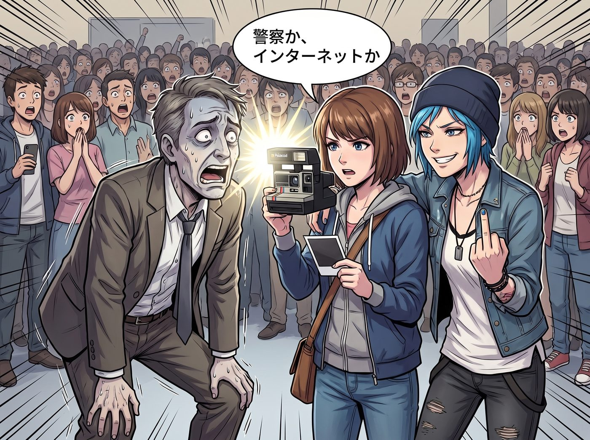
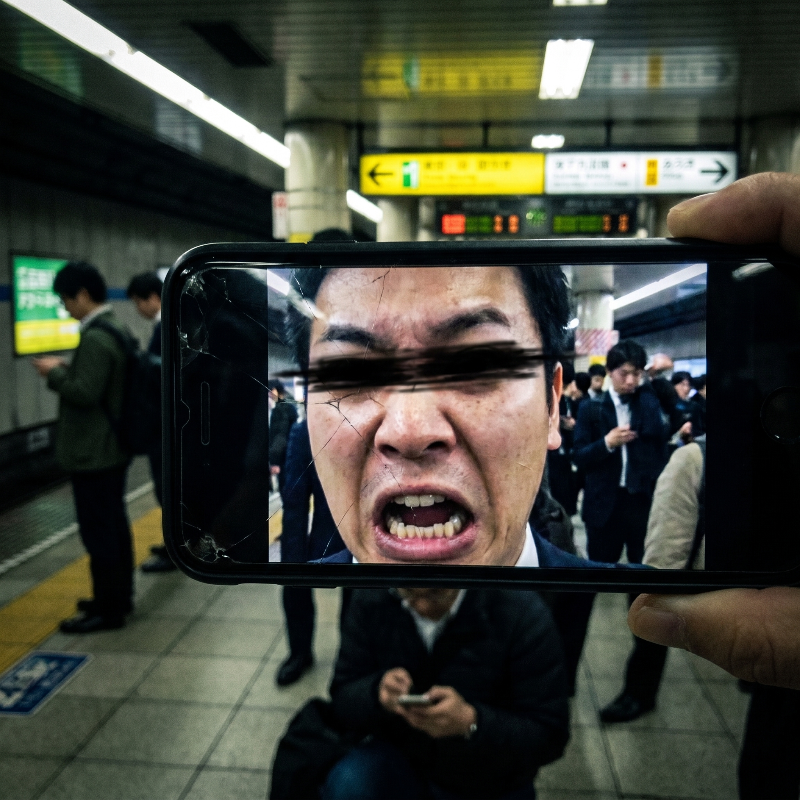

東京街頭的雙重反擊


一、撞人男的社會性死亡
日韓都會區近年確實出現了所謂的撞人男。這群人的心理特徵極度扭曲且懦弱：他們通常是生活壓力大、充滿無名火的西裝上班族，專門在擁擠處精準鎖定看起來好欺負、不敢聲張的年輕女性、小孩或低頭族，用肩膀重重撞擊對方來發洩情緒。
在 95% 的情況下，撞人族看到 Chloe 的瞬間，雷達就會狂響並自動繞道。日本的撞人男極度畏懼不可控的物理威脅。Chloe 身高一百七十五公分，一頭極具攻擊性的藍髮，穿著重型機車皮衣、鉚釘皮帶和厚重馬汀靴，雙臂滿是刺青，臉上常年掛著想打架就放馬過來的街頭兇相。這種標準的美式硬核不良少女氣場，在東亞街頭簡直是移動的哥吉拉。
然而，如果是在極度擁擠的十字路口，意外還是可能發生。
Max 完美符合撞人男的獵物畫像：身形嬌小、氣質溫和、經常為了調整相機焦距而處於半發呆狀態。假設一個滿身酒氣、剛被上司痛罵的中年上班族，從 Chloe 的視線盲區死角切入，朝著正在低頭換底片的 Max 狠狠撞去——
撞擊發生的瞬間，Max 被撞得一個踉蹌，相機差點脫手。那個上班族本來準備按照慣例，冷笑一聲繼續往前走，期待受害者默默吞下委屈。但他完全錯估了旁邊那個藍髮女孩的反應速度與狂暴程度。
Chloe 確實帶不了折疊刀過海關，也沒辦法隨身在東京地鐵裡掏出沉重的扳手，但對付這種只敢在暗處耍陰招的懦夫，美式街頭的大聲公與直接對抗就是最強的降維打擊。
Chloe 根本不會給他走遠的機會。她會一步跨上前，伸出那隻常年修車、肌肉緊實的手臂，一把揪住那個上班族廉價西裝的後領，像拖死狗一樣猛地將他整個人向後拽回來。在對方驚恐回頭的瞬間，Chloe 會直接用她那雙堅硬的馬汀靴鞋頭，毫不留情地踹在對方的西裝褲腿或公事包上，將他逼退到牆角。
日本撞人族最大的保護傘就是周圍人的冷漠與受害者的羞恥感。Chloe 會直接撕碎這把保護傘。她會深吸一口氣，用足以響徹整個地鐵站的音量，指著對方的鼻子爆出最純正、最兇悍的美式粗口，要求對方立刻道歉。
面對周圍瞬間聚集的數百道震驚目光，那個平時只敢欺負弱小的上班族會瞬間嚇得面如死灰，雙腿發軟，甚至連連鞠躬試圖逃跑。而這時，剛剛站穩的 Max 會默默舉起手裡的拍立得。閃光燈直接懟在上班族驚恐扭曲的臉上，Max 捏著緩緩吐出的相片，用她剛學會的三腳貓日語冷冷地說了一句：「警察，或者，網路。」
Chloe 則會得意地攬住 Max 的肩膀，對著那個狼狽的背影比出一個大大的中指，順便抱怨一句：「真可惜海關沒收了我的黃銅指虎，不然我剛才一定把他的公事包砸成廢鐵。」
二、痴漢的心理戰滅頂之災
新宿車站的晚高峰，擁擠得像一個巨大的鋼鐵沙丁魚罐頭。當 Chloe 和 Max 正在十幾米外的扭蛋機前爭得面紅耳赤時，落單在月台邊緣的 Victoria 和 Kate，完美符合了日本街頭痴漢與搭訕犯的終極獵物畫像。
一個滿身劣質菸酒味、穿著皺巴巴西裝的中年男人盯上了她們。他看準了外國女孩在異國他鄉遇到騷擾時通常會因為語言不通而選擇隱忍，於是刻意借著人潮的推擠，帶著令人作嘔的黏膩笑容，將身體朝著 Kate 的後背死死壓了過去，一隻手甚至已經不安分地伸向了她的裙邊。
如果是在幾年前，Kate 可能會嚇得渾身發抖、大腦空白。但在經歷了生死的洗禮、以及長期擔任二號車廂腹黑食神的心理歷練後，這位小天使早已進化出了降維級的心理打擊能力。
面對武力值為零的絕對劣勢，她們根本不需要揮動拳頭，而是直接啟動了日本社會最致命的核武器——公開處刑與極致的社會性死亡。
男人那隻骯髒的手還沒碰到衣角，Kate 突然無比精準地轉過身，一把緊緊反握住了男人的手腕。男人愣住了。他預期中的尖叫、恐慌或退縮都沒有出現。相反，眼前這個宛如天使般純潔的女孩，正用一種充滿了極度悲憫、同情甚至帶著一絲淚光的眼神注視著他。
「天啊，這位先生，您的手痙攣得這麼厲害，是神經中樞已經病變到這種無法控制肢體的地步了嗎？」
Kate 用她為了這趟旅行特意苦學的、發音極其標準的日語敬語，以一種確保周圍半個圈子的通勤族都能聽得一清二楚的洪亮音量，發出了痛心疾首的驚呼。人群的目光瞬間像探照燈一樣全部掃了過來。
在男人驚恐放大的瞳孔中，Kate 沒有鬆手，反而用雙手將他的那隻手捧在胸前，聲音裡帶上了神聖的哽咽：「在這麼擁擠的車站，您的肌肉萎縮症竟然讓您不受控制地往年輕女孩身上倒！請各位讓一讓，我們必須立刻為這位病患呼叫救護車！」
這是一場心理戰的絕對碾壓。在日本這個極度害怕給別人添麻煩和社會性羞辱的國家，Kate 這種用最溫柔的語氣、最無懈可擊的善意，扒光對方所有遮羞布的腹黑戰術，比直接給他兩耳光還要讓他生不如死。
而此時，武力值同樣為零的 Victoria，完美補上了物理毀滅之外的階級與經濟毀滅。
名媛冷笑一聲，直接抽出手機，打開閃光燈，對著男人那張慘白扭曲的臉連續按下了十幾次快門：「聽著，西裝男。我的家族法務團隊會在明天早上八點前，把這張照片結合人臉識別技術，直接發送到警視廳、你公司的人事部門，以及你妻子可能在的任何社區網絡。現在，帶著你的病態神經，從我面前滾出去。」
男人發出了一聲近乎崩潰的哀嚎，猛地掙脫，連滾帶爬地擠開人群逃竄，連掉在地上的公事包都不要了。
當 Chloe 和 Max 急匆匆地擠回月台時，只看到周圍的人群依然保持著敬畏的真空圈。
「沒有哦。」Kate 溫柔地整理了一下裙擺，將手裡剛買的冰鎮汽水遞給 Chloe，臉上依然是那副聖潔且毫無破綻的天使微笑，「剛才有位先生差點摔倒，我和 Victoria 只是稍微關心了一下他的健康狀況而已。」